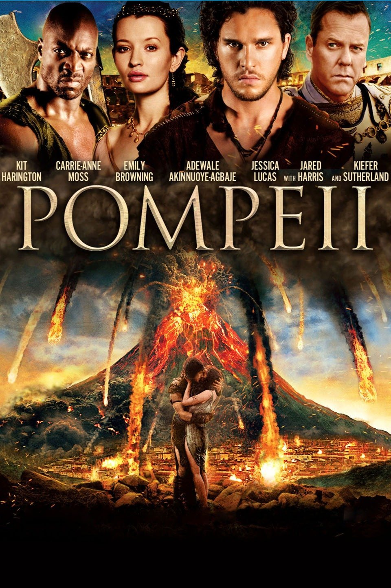

 საიტის შემქმნელი გიო ხანიაშვილი.
pompei
pompei
პომპეი არის 2014 წლის ეპიკური რომანტიკული ისტორიული კატასტროფის ფილმი, პროდიუსერი და რეჟისორი პოლ უ.ს. ანდერსონი . [8] საერთაშორისო კოპროდუქცია შეერთებულ შტატებს, გერმანიასა და კანადას შორის, [5] ის შთაგონებულია და ეფუძნება ვეზუვის მთის ამოფრქვევას 79 წელს, რომელმაც გაანადგურა პომპეი , რომის იმპერიის ქალაქი. ფილმში მთავარ როლებს კიტ ჰარინგტონი და ემილი ბრაუნინგი ასრულებენ , კერი-ენ მოსი , ადეველ აკინნუოიე-აგბაჯე , ჯესიკა ლუკასი , ჯარედ ჰარისი და კიფერ საზერლენდი მეორეხარისხოვან როლებს ასრულებენ.
პომპეის პრემიერა შედგა საფრანგეთში, ბელგიასა და რუსეთში 2014 წლის 19 თებერვალს და გამოვიდა მეორე დღის განმავლობაში არგენტინაში, საბერძნეთში, უნგრეთში, იტალიაში და მოგვიანებით შეერთებულ შტატებსა და კანადაში 2014 წლის 21 თებერვალს. [9] [10] ეს არის FilmDistrict- ის ბოლო ფილმი, სანამ ის გაერთიანდებოდა Focus Features- თან . გამოსვლის შემდეგ, პომპეიმ მიიღო ზოგადად არაერთგვაროვანი მიმოხილვები და გამოიმუშავა $117,8 მილიონი ბიუჯეტიდან დაახლოებით $90 მილიონი.
Visit to pompeii